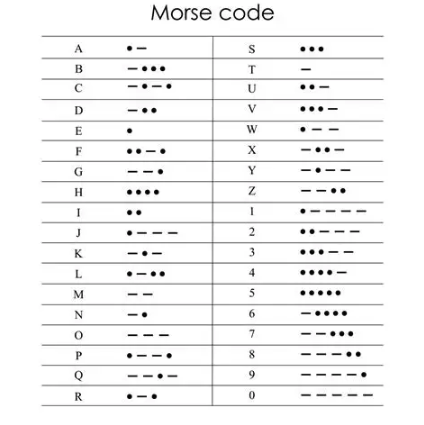

Daily
reverse beacon
UTC time +6 hours CST
NETS
netfinder.radio
Wed 20:00 CT 40 Meter CW Net 7122
omiss
FISTS frequencies
numbers stations
Live Numbers Stations priyom.org
numberstation.co.uk
hardware hacking channels
Save it for Parts
Shortwave Radio videos
ManCave Effects
Hamradio SDR
Washington DC | na5b.com:8901
List of SDR
Milford PA | www.k3fef.com
websdr nl
Russian SRR76
Hamradio Links
vanity call signs
qrz.com
lotw.arrl.org
dxlook.com
eham.net
hfunderground.com
radioreference.com
hamradioforum.com
Winlink
winlink.html
CW mode
example transmission
learn morsecode youtube channel
Farnsworth 25 wpm
POTA cw exchanges youtube
SOTA vocab youtube
QRP kits
qrpme.com
4 State Kit Index 4sqrp.com
Antennas
RigExpert AA-55 ZOOM youtube tutorial
youtube RigExpert AA-55 ZOOM
JPC-12 Quick Deploy youtube
isotron antenna ebay
BH4DDF 1:1 Balun
bh4ddf-bal-501configuration.pdf
Reddit Links
/r/amateurradio
/r/hamradio
Lab599
Lab599 TX-500
$400 battery pack
ebay $129 battery
ICOM IC-756
IC-756.pdf Manual
mods and repairs
Demo youtube
PennTek
PennTek TR-45L Transceiver
morse code
 morse code qso
morse code qso
 hambands US
hambands US